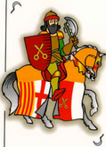

<!--Visible-->
<span *ngIf="carta.visible" >
    {{carta!.num}} - {{carta!.pal}}
    
</span>

<!--No visible-->
<span *ngIf="!carta.visible" (click)="agafar(carta)">
    {{carta!.num}} - {{carta!.pal}}
    <br>
    
</span>
